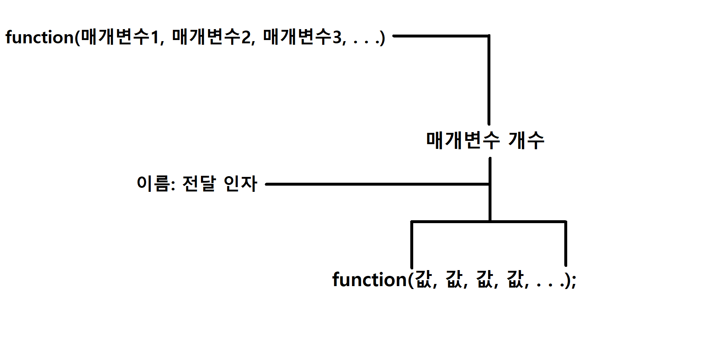

함수는 코드 길이를 짧게 해줄뿐만 아니라 여러가지 기능을 포함시킬수 있습니다
_________________________________________
함수 만드는 방법 / 사용 하는 방법
_________________________________________
자료형 이름(매개변수1, 매개변수2, ....)
{
코드
.
.
.
return 자료형에 맞는 값
}
return 의 의미는 되돌려 받는 값을 말합니다
쉽게 말해서 우리가 함수를 사용하면 return 에 있는 값을 받아쓰는거랑 똑같습니다(전달인자 빼고)
그리고 그동시에 함수가 종료 되었다는것을 의미합니다
만약에 이런 함수가 있고
int Simple(int value)
{
return value;
}
Simple 함수에다가 30을 인자로 전달해주면 어떻게 되는지 한번 봅시다
위키피디아: 매개변수
다행이도 위키피디아가 잘(?) 설명 해주어서 다행이다..
int value = Simple(30);
int Simple(30)
{
return 30;
}
그러면 return 값이 30이니깐 30 을 되돌려 받는다는 의미 이므로 int value = 30; 과 같은 의미입니다
자료형이 void 인 함수는 return 을 안해도 됩니다
return 을 하고 싶다면 return; 이렇게 하시면 됩니다
위키피디아: 함수
예제:
int test(bool nope, int yes, float no)
{
return yes;
}
int MeM(bool AreYou)
{
return AreYou; //bool 도 정수형이라서 괜찮습니다
}
float Mega(int x, int y, int z, int height, int width, int scale, int client, int target, int client_health, int target_health){
return 0.5;
}
위키피디아: 매개변수
자 일단 위키피디아에서 보시면 아마 90% 는 다 이해할거라고 믿습니다
함수 사용하는 방법:

--------------------------------------
함수 모양:
int uou(int test, int mem){
return test + mem;
}
사용:
int value = uou(30, value+1);
계산:
int uou(30, 0+1)
{
return 30 + 0 + 1;
}
결과:
int value = 31;
--------------------------------------
함수 모양:
int what(int value1, int value2){
value2 = 103;
return value1 + value2;
}
사용:
int value2;
int result = what(555, value2);
계산:
int what(555, 0(value2))
{
0(value2) = 103;
return 555 + 103(value2);
}
결과:
int value2 = 103;
int result = 658;
--------------------------------------
함수 모양:
float add(float value1, float value2){
float result = value1 + value2;
return result;
}
사용:
float value = add(10.0, 20.001);
계산:
float add(10.0, 20.001){
float result = 10.0 + 20.001;
return result; //return 10.0 + 20.001 과 같습니다
}
결과:
float value = 30.001;
--------------------------------------
_________________________________________